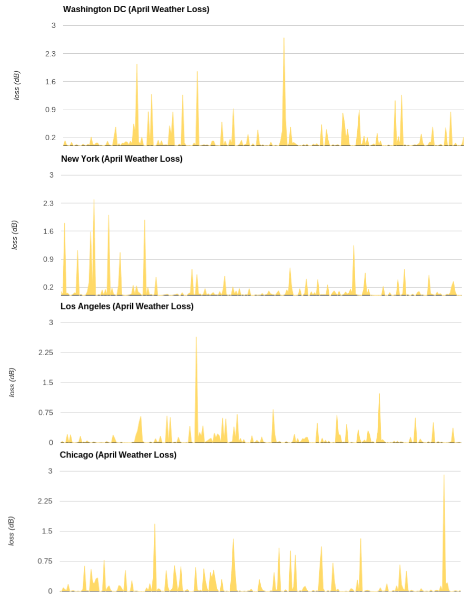
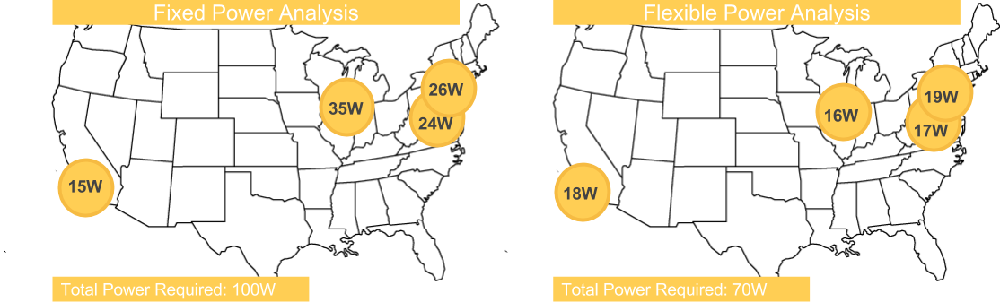
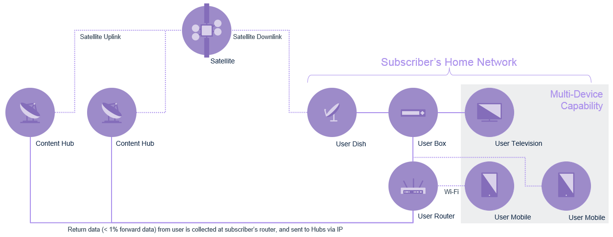
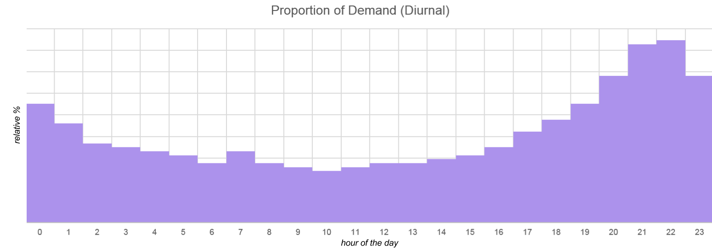
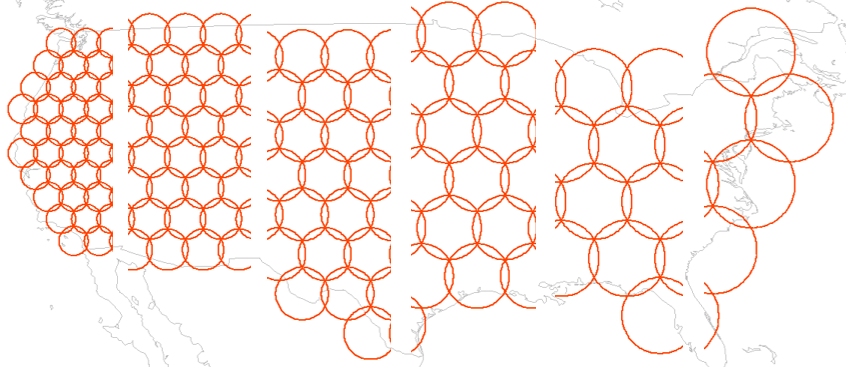
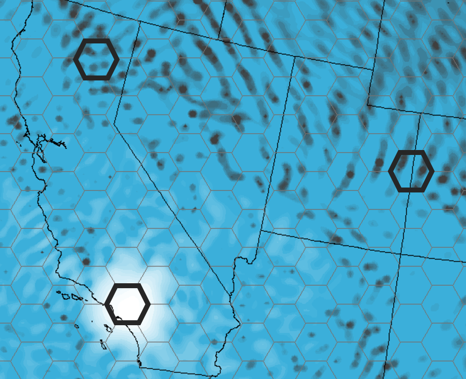

· Architecture Design · Analysis · Antenna · Atmospherics · Beamforming · Bit-Error Correction/Detection · C,C++ · Capacity · Concept of Operations (ConOps) · Data Visualization · Digital Signal Processing · Digital Control Systems · End-to-End Performance · Frequency Reuse Optimization · GPS · Ground Terminal Performance · Hardware (Payload) · Interference Calculation · Javascript · Laser Comm · Link Performance · Network Routing· MATLAB · Modeling/Sim · Multiple-Input Multiple-Output Antenna · Python · Radio Frequency Comm· Resource Allocation Optimization · Satellite Orbits · Satellite Payloads · Simulink · STK (& Cesium) · Trade Studies · VBA, Visual Basic · Verification/Test · VHDL/Verilog ·
I developed a clever analysis to reduce required payload power.
some details modified/omitted to protect intellectual property
Part of being able to correctly model the performance of a space-based communications system is accounting for the losses due to specific atmospheric conditions. Customers typically require certain performance characteristics to be achievable with at a set occurrence -frequency (e.g. 99.5% of the time). The atmospheric losses of this occurrence -frequency are typically calculated using the International Telecommunications Union's (ITU) recommendation documentation.
A typical way to ensure performance requirements are met is to use the ground equipment parameters and the ITU-recommended atmospheric loss values to derive an EIRP requirement (in dBW) for several points within the coverage region. If the spacecraft can provide EIRP at or above this required level at all points, then the system will perform as required at the specified occurrence -frequency. This approach allows payload elements (effective antenna diameter, amplifiers) to be sized in order to achieve the required performance.
However, the idea that these quantities are fixed is becoming less true with the rise in flexible payload technology. Such technology removes the fixed mapping from hardware element X to city Y. I developed an analysis that takes advantage of this potential for re-allocation, therefore enabling the ability to size hardware based on the overall occurrence -frequency rather than point-by-point.
The ability to dynamically allocate EIRP means that, at any given instant, if a location's atmospheric conditions are benign, the spacecraft can allocate the power elsewhere. In fact, over a region the size of a large country or continent, atmospheric conditions at any one moment vary greatly.
Thus, for a flexible payload system, the total system power requirement at a certain occurrence frequency is often much less than simply summing the computed individually required powers. Take for example the following notional spot beam system, who's power can be dynamically allocated to beams.
It becomes clear that the standard analysis unnecessarily assumes that the payload needs to provide enough power to meet overcome the occurrence -frequency's corresponding atmospheric losses simultaneously while the flexible payload analysis takes advantage of the joint probability distribution.
In short, a 99.5% availability at the system level, does not necessitate the corresponding 99.5% power at all cities at all times - and when evaluated properly, this corresponds to payload power savings!
I initiated and designed a proof-of-concept Space-Based Video-On-Demand concept of operations and business model.
some details modified/omitted to protect intellectual property
We're always looking for new applications of satellite technology. Video on Demand is a hot growth area, so I put together an architecture that modifies some of our High Throughput Satellite designs for the Video on Demand use case, while still tacking advantage of satellite's inherent ease of broadcast.
The networked system is quite typical to what one would find for a high throughput satellite. The specifics for Video on Demand can be highlighted by the following three key features:
Caching content by issuing a user-box with a large storage drive is one of the design decisions enabling the system to be capable of supporting millions of video on demand subscribers. Video content is not demanded with uniform probability, some content is more popular. Taking advantage of this fact, in combination with some user-specific data analytics can be used to cache content that users are likely to demand before they even request it, thus reducing the number of instant demand requests through the space segment.
The most universally desired content can be cyclically broadcast in a large area national beam during off-peak hours. During peak hours, the national broadcast beam can optionally be repurposed to transpond special live events.
The rest of the Video-on-Demand requests that have not already been cached on a subscriber's local equipment will be served via highly localized spot beams, under a high-frequency-reuse scheme.
In order to fully maximize the number of users supported by the system a simple buffering scheme can be employed. The buffering scheme aims to take advantage of the fact that often, same-cell-subscribers will request the same content at roughly the same time. Depending on the size of the network, and size of the content-library, requiring a demand-request to wait a short time (30 seconds) to see if any other requests come in for the same piece of content, thus aggregating to one request, can decrease total required demand to the space segment by a significant amount. Assuming parameters that would support a competitive video-on-demand system for United States subscribers, a 30 second buffer (to be masked by rolling a short advertisement) decreases demand in Gbps by 30%.
I have an excellent track record in planning scope of analysis to find the right results on the right timeline.
some details modified/omitted to protect intellectual property
Recently I was working on a highly-time sensitive project. My team was tasked to come up with an ideal architecture for a specified communications mission. We had spent a few days generating concepts and ideas, but at a 9:00AM tag-up, I was told that we needed an initial design for a 4:00PM internal design review. As the communications lead for the campaign, here's how I spent my time:
First, I outlined a simple to do list. For this specific design objective, I needed to determine the best way to serve useful capacity to an area of non-uniform demand. Due to size, weight, and power objectives from other team members, the scope of my system level design was limited to up to two beam sizes. If I could determine a successful beam-laydown by the end of the day, the team would be able to move forward.
With a wide open field of possible beam laydowns and frequency plans, I decided to start by simply allocating bandwidth to beams and geographic areas. Smaller beams generally have higher directivity and can offer a higher capacity density to their regions. Larger beams are generally better suited to providing ubiquitous coverage to a large region.
In order to enable trade studies throughout the day, I first created notional beam lattices using standard hexagonal tessellations. I created 10 files, each detailing a simple beam-lattice as applied to the coverage region of interest.
To be able to compare designs against one another, I needed to develop some metric to measure effectiveness of each beam lay-down. Ultimately, sellable system capacity would be the most telling metric, since it closely relates to the customer's business objectives. Sellable capacity, in this case, referred to the intersection of capacity provided from the spacecraft and population per beam. Since the final capacity provided calculation is dependent on the amount of spacecraft power allocated per beam, and can thus only be really only be evaluated once several other parameters have been determined, I chose to begin by assigning bandwidth to population. I grabbed the latest NASA world-population estimates to facilitate my analysis.
Within each possible beam-lattice configuration, I used my custom analysis tool to tally up the population in each beam. This information would become useful once I started building a real usable beam laydown out of my notional trade space results. The population per beam information would be useful in indicating which regions are better served by which beam size.
Thinking back to my imposed constraint of two beam-sizes, I decided that the trade space could be encapsulated by two independent variables: Beam Size 1, and Beam Size 2. I decided to run some estimates for all combinations of beam-size pairs, to determine (for each pair) how many beams of each size are required for a fixed beam count (hardware constraint). For example, if my design was to be fixed at N beams, a closed-form system of equations can be solved to determine number of each type of beams (A,B).
A + B = N
A·AreaOfBeamTypeA + B·AreaOfBeamTypeB = CoverageArea
I then used my analysis tool to iterate through each beam-size pair, and allocated spectrum to beams, according to the previously computed population statistics. At this point, each beam was assigned a bandwidth, and corresponding C/I estimate, so I next allocated the fixed power according to C/I such that no beam was heavily C/I nor C/N limited. Finally, each beam had enough information to provide a capacity estimate.
Upon reading through my results, I quickly became unsatisfied with an outcome: the best performing combination was when the beam sizes matched for the smallest possible beam. This didn't seem right, and I quickly understood that my analysis was using a misleading metric; I was failing to account for the fact that capacity distributed to areas of relatively low population was counted as just as valuable as in high population areas. Based on this observation, I modified my simulation tool to evaluate and optimize for a number I called "sellable capacity", the intersection of capacity served and demand (which I modeled using population).
With these results I was able to determine the beam-size pair that achieves the most sellable capacity for my assumptions. Having only an hour remaining before sharing my results with the team, I started putting a presentation together. The obvious content was a picture of the optimized beam laydown generated by my custom analysis, along with some metrics such as total capacity, sellable capacity, antenna sizes, etc. However, presenting a single static answer as a point in space is not good practice. I wanted to be able to put some context behind the analysis, so I re-executed my code using different values for the any parameters that were imposed hardware constraints. It's always useful to know how much a design would be impacted by a restriction, or relaxing in a set of constraints. I also presented some images of the beam-size pairs near, but not exactly, the optimal solution. This sensitivity analysis is helpful in illustrating why the "ideal solution" is in fact the "ideal solution", as trends in interference per beam, and stranded capacity can be quickly visualized.
This value in this information is not only the understanding of what performance a system like this can provide, but also speaks to what sorts of antenna equipment or payload units is necessary to achieve it.
I've gotten my hands dirty in hardware and built a Forward Error Correction Hamming Code on a flight unit.
some details modified/omitted to protect intellectual property
Forward Error Correction refers to the technique used for controlling data errors over noisy channels. In short, messages can be encoded in such a way that a receiver with knowledge of the coding scheme can take advantage of certain redundancies in the transmitted message to detect or possibly correct bit errors as they occur in transmission. As part of the Digital Signal Processing (DSP) team, my task was to design the encoding/decoding scheme as well as the on-board hardware capable of decoding the spacecraft command message sent to the satellite. My task in designing the Forward Error Correction logic into the Command Receiver was to build a working circuit with as few hardware-gates as possible. It goes without saying that implementing a receiver without Forward Error Correction would certainly reduce the hardware count, but with a unit level requirement for "Command Error Rate", it seemed certain that some level of Forward Error Correction would be necessary.
For this particular application, there was no requirement on information rate, or speed of message transmission that would require an extremely low overhead encoding scheme. With no penalty to a less efficient coding scheme, and a push for minimal hardware impact, a Hamming Code was the right fit for the application. Mocking up the spec behavior of the unit with a MATLAB simulation allowed us to generate a BER (bit error rate) vs Signal Power curve. From this curve I used the bit-per-frame and frame-per-command definitions to derive a CER (command error rate) vs Signal Power curve. Theoretical calculations of {7,4}, {15,11}, {31,26}, {63, 57} and {127, 120} hamming code behavior showed that a {31,26} Hamming Code would shift the CER vs Signal Power curve enough to meet the "Command Error Rate" requirement.
After building a {31,26} Hamming Code Decoder into the existing MATLAB simulation to confirm the desired performance metrics, I defined a series of test criteria that I would use to eventually confirm that the true hardware receiver was properly functional. I wrote a series of tests to test the Hamming Decoder Block by itself. These tests ensured that individual sets of 31-bit words were properly decoded into their correct 26-bit messages. I wrote a script to complete an exhaustive test of all 2^26 unique cases, knowing that an overnight simulation should be long enough to run the circuit real-time 2^26 times. With these test-descriptions out of the way, the remaining tests put the Hamming Decoder Block in various flight use cases, testing the "seams" and "switches" and "firsts" and "lasts" of operation to make sure that all edge cases operated successfully. Finally, I built the circuit using Verilog and ran my tests in System Verilog.
I helped build and manage the development of our current System Capacity Evaluation Tool from the ground up.
some details modified/omitted to protect intellectual property
Working in the internal research and development group, we thought that rather than developing yet another excel-based link budget calculator, we'd develop a tool capable of taking systems as we see them and evaluating various performance measures of effectiveness. This meant that we were looking to create an object model of moving nodes, made up of antenna, amplifiers, converters and processors. In the end the goal was to have the ability to model communication requests from a begin-node to an end-node, and evaluate their ability to traverse the network. I'll focus on some of the snippets that I helped with in particular.
Architecting high throughput systems capable of 100s of Gbps through a single spacecraft depends on a high degree of frequency reuse. In order to make use of a given slice of bandwidth multiple times, it must be reused in geographic regions distinct enough that an antenna pointed at one can successfully "ignore" the others - this is the basic charter of beamforming. Therefore, our simulation tool needed the ability to optimally create gain patterns peaked in certain areas, and nulled in others in the far field. Our tool uses a closed form matrix solution determining individual feed excitations as a first solution and then optionally optimizes further based on user input.
Above is an example pattern where the region of interest is Los Angeles, and areas in Northern California and Eastern Utah are re-using the same frequency with minimal interference.
As communication networks become larger and more complex, modeling their performance at the individual link level is no longer sufficient, as a given message may pass through multiple intermediate nodes before arriving at its final destination. All of this routing makes for multiple possible routes from "A-to-B", and therefore multiple possible link budgets with multiple possible link quality metrics. To capture this in our modeling tool, I helped develop a modified "Djikstra's Algorithm" to allow a communication request to find the best path from point A to B.
In this case the "cost" of any edge in the graph of nodes refers to the received signal-to-noise-plus-interference ratio of the message. Thus, the calculated routes are determined not-only to maximize signal strength, but also to minimize potential interference. This allows as many requests as possible to be accommodated by the network, maximizing total network capacity.
As alluded to in the previous section, interference calculation is key to the proper modeling of system performance. Not only did I help develop the model capable of computing co-channel interference (due to frequency reuse, and mitigated by beamforming) - but the fully abstracted interference from any node to any other node.
I support all my analyses and designs with effective communication and interpretation of data.
some details modified/omitted to protect intellectual property
A picture is worth a thousand words, and often it's easier to draw that picture than write those words. Here are a few examples of illustrations I've built for various audiences and messages.
In a high throughput, multi-beam system, designs often are quite complex and it becomes difficult to identify which "knobs" can be turned to improve performance and which will have little-to-no effect. At a top level, downlink capacity is driven by Signal-to-Interference-plus-Noise ratio. Determining whether that ratio is being driven by the "interference" or "noise" term is the first step in enabling certain architecture optimizations. This graphic serves as a simple visual indicator to give an idea as to which areas within the coverage region are limited by C/N (noise), and which are limited by C/I (interference).
For example, if the system is under-performing in San Francisco, it is immediately clear that pure Signal-to-Noise ratio is driving this performance. That is - simply increasing power to the beams responsible for Northern California would successfully improve performance metrics in San Francisco, whereas improving performance in Dallas would require a different approach. Dallas is receiving plenty of power but performance is limited by interference. In this notional example, adjusting a frequency reuse scheme or implementing a better power control algorithm may be required if Dallas needs more capacity.
Recently my team was tasked by some business executives to identify which out of a handful of existing on-orbit spacecraft would be best suited to carry out a specific mission objective they had in mind. They were expecting that a detailed analysis taking several days would be necessary in order to find an answer to their query. However, once I gathered all the operating details on each spacecraft, I realized that for this application, no analysis was needed. The Shannon-Hartley Theorem
Capacity = η·Bandwidth
Capacity = Bandwidth·log(1 + Signal-to-noise-plus-interference-ratio)
is a truth ingrained within any electrical engineer, but not necessarily all business executives. I created an image similar to the following to illustrate that since all messages were at a pre-determined bit efficiency (bit/baud), I could tell by bandwidth alone, which system would perform best.
| BW = 50 MHz | BW = 100 MHz | BW = 50 MHz | BW = 100 MHz |
| η = 1.5 bit/baud | η = 1.5 bit/baud | η = 3.0 bit/baud | η = 3.0 bit/baud |
| C = 75 Mbps | C = 150 Mbps | C = 150 Mbps | C = 300 Mbps |